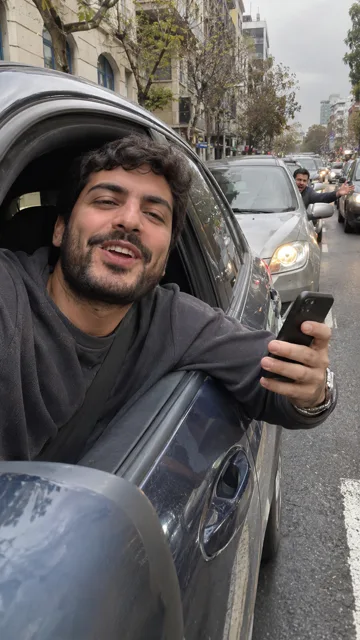
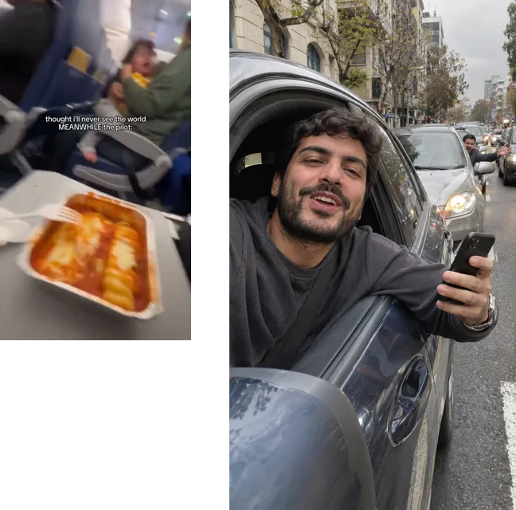
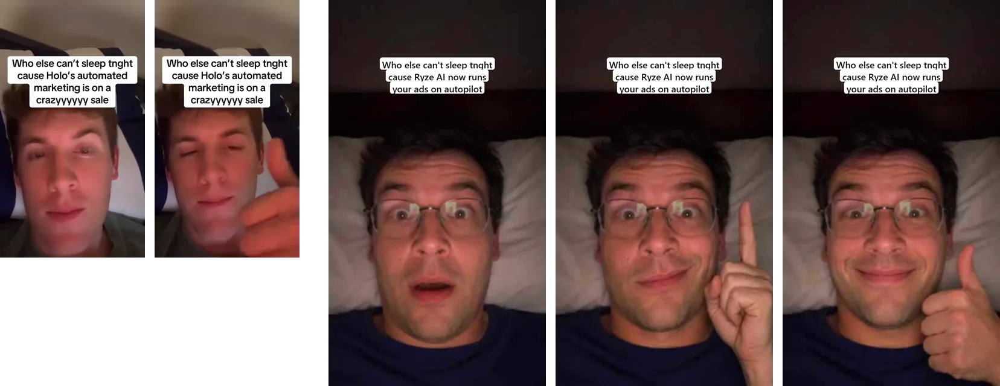

Ryze Production
14formats: 9 from analyzed videos, 5 for my concepts
74blocks from Holo, Ryze and lisaworldverse videos and my concepts: hook, pain, demo, testimonial, call to action
29phrases, word for word, from business owners and marketers
Concepts → formats → a hundred videos
With a hundred videos you can see which hook and which block keep people watching, and what works carries over to the next scripts. Below are the videos for the brief first, then how it works in my Notion, step by step from format to team.
Typical script structure
- Emotional hook+ promise
- Pain
- Proof
- Fear
- Objection handling
- Result
- Urgency
- Call to action
RYZE_/_01
Videos
One format in full; the rest are variants at different depths.
I studied Holo’s videos, including winners in the Meta Ad Library, and made variants based on them.
What’s not here. Most of the Holo videos I analyzed are live footage with the interface laid over it. Ryze’s screens and numbers go in during the edit, so the interface is shown in detail in the first format and in “2099”. In the other concepts it’s implied.








Takeaways
1. The hook comes first, then the blocks. After the hook comes the usual block structure: promise, pain, proof, fear, objection handling, result, urgency, call to action. Concepts and formats are assembled from blocks. With many videos, stats build up per block, and blocks can be ranked by how they perform.
2. In the analyzed videos, emotion, sound and picture hold attention together. In Holo’s videos a live voice starts in the first second, the hook lasts 3–5 seconds, and the person on screen gestures and reacts naturally. That emotion builds trust or interest.
3. The go-to device is a hook followed by a customer testimonial told as a story. After the hook the customer tells their story: pains, fears, how they were resolved, proof. The other option is a quick promise in the first seconds.
On look-alikes. I think making look-alikes of successful videos is fine: within reason, there’s no shame in copying what worked. But I don’t stop there. Look-alikes are where devices develop, and the ones that work can then be combined.
Live-action videos. They’re worth trying. There are three ways to keep the emotion of a live video:
- reshoot it to the same scheme;
- shoot it live and replace the people afterwards, keeping the emotions;
- on channels where it’s allowed, regenerate the live video.
Someone else’s video goes into an ad only with the creator’s license and the consent of the person on screen.
How this turns into a hundred videos and where block stats build up is below, in the sections from “Format” to “Skills”.
RYZE_/_02
Format

A format is the angle and point of view: the shooting type and the core setup. A street interview with a mic, a chat between two friends, a selfie, a mockumentary, or a mix. The format is set first, and the first concept comes out of it. In the “Shouldn’t you be at work?” concept, the hero is relaxing during working hours, a friend asks why he isn’t at work, and he answers that Ryze runs his ads. In the next episodes the single camera position, the friend’s question and the hero’s answer stay; the place and the activity change: a barbecue, fishing, a stadium.
The “Formats” database: 14 formats, 9 from the analyzed videos and 5 for my concepts. A one-line pitch, shooting type, source video and the concepts in each format.A concept is a specific video: script, references, frames, materials. In effect it’s the brief for whoever makes it. The transition, pain, product demo, testimonial and call to action change from concept to concept and depend little on the format.
The full “Blocks” database: 74 blocks by type: hook, transition, pain, product demo, objection handling, promise, testimonial, call to action. Each has its mechanism, channel and source video.
- Formatshooting type, point of view, setup
- Conceptscript, references, frames
- Blockshook, pain, demo, testimonial, CTA
- Assetedited video
- Releasepublished on Instagram, YouTube, TikTok
- KPI factsviews, 3 s hold, completion, clicks
- KPI cardssummary by release
- ← Blockwhich hook holds the first seconds
- ← Conceptwhich video to shoot in variants
- ← Formatscale, rework or close

With a hundred videos, every block builds up stats. The retention graph shows at which block viewers drop off, and a hook is tested with two versions of the same video with different openings. The block that wins goes into new scripts. The links between the databases are already in place; the numbers below are demo values for now.
Concept metrics: 3-second hold, completion rate, CTR and conversion, next to each concept’s format. The numbers are demo values.RYZE_/_03
Reference breakdown

I break a reference video down by what each line does: hook, transition, pain, demo, testimonial, call to action. Each block goes into the database with its line, its device and what holds attention. Six Holo videos, two Ryze videos and the lisaworldverse video from the brief gave 60 blocks; my concepts added 14 more.
The “References” database: videos analyzed from the brief (six Holo, two Ryze, lisaworldverse) and from my own selection.
Repeats turn into established devices. Every hook in the analyzed videos goes for emotion. The story comes through the hero’s personal experience, like a testimonial. That a hook should trigger emotion or trust is still a hypothesis; the next videos will test it. Hook setups grow out of the voice of the audience: 29 phrases about pain, fear of AI and what makes a person start looking for a service. The phrases are sorted into three buyer personas; one of them is an ad specialist.
Audience personas: three personas, each with buyers’ phrases word for word. Shown: “Ad specialist”, 8 phrases.RYZE_/_04
Edit timeline
The script is assembled on a timeline: blocks by the second, a start frame and an end frame for every shot, separate tracks for references and for variant B. Line length is based on the speech rate in the references: 3.4 words per second on average.

RYZE_/_05
Skills and the team
A skill is an instruction for the model that connects the knowledge base to a specific task. When the model builds the next script, the skill feeds it blocks and devices from the base. Once live metrics come in, the blocks with the best numbers will go first.
The team’s skills live in GitHub. Editors, designers and AI creators edit their own skills and collect reference examples. Every edit is a separate change with a reason, visible to the whole team and easy to roll back. Once a week I or the leads review the edits and decide which one becomes the standard. A device goes through three levels: working, established, rule.
The same skills handle briefing and sign-off, and analytics can be connected to them. At RAWMID, after the standards, a typical task needed 0.7 revisions instead of 2.4 — the “Standards” case.
- Collecting references
ref-collect - Breaking a video into blocks
video-ref - Concept from the voice of the audience
concept-pipeline - Shot frames
image-prompt - Craft techniques
craft-techniques - Edit
video-edit - Hypothesis testing
hypothesis-test - Takeaway → rule for everyone
knowledge-scale
RYZE_/_06
About me
Creative director. I build the system a team uses to ship many videos and see which of them work.
- AI pipelineCase: from data to frames and metrics. It was used to build Dyson and Airbnb.
- My experience, honestlyI’ve worked with AI for four years, every day for the last two-plus. I haven’t made many AI videos yet. This task goes as far as the edit timeline; I didn’t do video generation or lip-sync.
- Production with a teamRAWMID: a team of 10+, a shooting guide, video and Reels.
- Reference breakdownI break down other people’s ads all the time. The block database above was built the same way.
- Knowledge stays in the companyA rule found on one video is written into the base and the skill. Anyone on the team can repeat it, and it doesn’t leave with the person.
- PortfolioAll cases on this site. I built the site myself too.